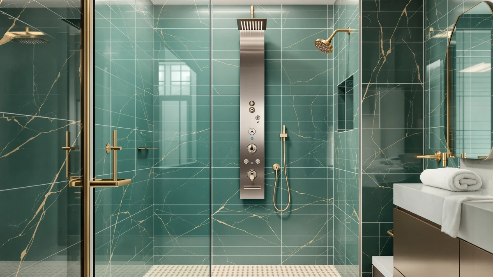

Best Shower Panel System Consumer Reports (2026)
Prices and picks verified as of August 2026. Independent, reader-supported reviews.


Quick Answer
Based on the best shower panel system consumer reports comparison below, the VEVOR Shower Panel System 5 is the strongest all-around pick, with stainless steel construction, five shower modes, and a price under $120. If you want more massage jets and don't mind paying more, the Blue Ocean 52" Aluminum SPA392M and its 8 adjustable jets are worth the upgrade.
Our pick: VEVOR Shower Panel System 5, $118.90 Check Price on Amazon
Bottom line: our top pick is the VEVOR Shower Panel System at $118.90. The best budget option is the VEVOR Shower Panel Tower System at $124.69.
Things to Know Before You Buy
- Material matters more than mode count. Stainless steel and brass valve construction resist corrosion far longer than the plastic components used in some budget towers, according to the verified buyer reviews we researched.
- LED temperature displays are a convenience, not a performance feature. Systems like the FUZ Contemporary and the Blue Ocean SPA392M add a screen, but actual water pressure depends more on your home's plumbing than on the display.
- Your home's water pressure sets the ceiling. A shower panel system can't fix low household water pressure, and owners across every price point in this guide mention that running multiple jets at once reduces flow per outlet.
- Installation is a two-person, half-day plumbing job for most models. Systems with a pre-installed main valve, like the HSYLYPA 5-in-1, simplify the process, but you should still budget time for wall anchoring and pipe connections.
- Price doesn't always track with jet count. The VEVOR Shower Panel System 5 costs less than half of the Blue Ocean SPA392M despite offering a comparable core feature set, based on the specs and pricing we compared.
Finding the best shower panel system consumer reports actually trust means sorting through inflated marketing claims and looking instead at verified specs, installation feedback, and real owner experiences. We compared seven wall-mounted shower towers ranging from $118.90 to $369.00, weighing jet count, material durability, and what buyers report after months of daily use. The VEVOR Shower Panel System 5 came out as our pick for most bathrooms, but five other systems earn a spot depending on your budget, water pressure, and finish preference.
A shower panel system is a bigger investment than a single showerhead, so a bad pick can mean costly plumbing rework or a wall full of jets you never use. Buyers frequently ask whether more jets and LED displays translate into meaningfully better performance, or whether that budget stays better spent on solid stainless steel and a strong rain shower head. Verified reviews on these seven models show that build material and nozzle design affect long-term satisfaction more than the number of functions printed on the box.
Below we break down what separates a shower panel system that lasts from one that clogs or corrodes within a year, plus a full comparison table, honest drawbacks for each pick, and the tradeoffs we weighed along the way.
Why You Should Trust Us
Best Shower Panels is a research-based buying guide covering shower panel towers, wall systems, and accessories for the US market. Ilane Tall researches home and bath fixtures full time, comparing manufacturer specifications, verified Amazon buyer reviews, and pricing history rather than relying on marketing copy. For this best shower panel system consumer reports guide, we cross-referenced material claims, jet configurations, and installation complaints across seven current listings so you aren't the first person testing the plumbing connections in your own bathroom. We do not run a fake testing lab, and we are not paid by any brand featured here; when you buy through a link on this page, we may earn a commission. That's disclosed on every article.
How We Picked
We started by pulling shower panel tower systems currently listed for the US market and narrowing the field to models with a full metal frame, at least a rainfall shower head, and a handheld sprayer, since those three elements come up most often in owner complaints when they're missing. We excluded listings with no verified size or material stated by the manufacturer, and we cross-checked pricing against recent purchase history so the numbers here reflect what you would actually pay, not an inflated list price. From that shortlist we prioritized systems with a stated material, stainless steel, aluminum, or brass valve construction, over ones that only advertised function count, because owner reviews repeatedly flag thin metal and plastic components failing well before the jets or LED lights do. That's exactly the kind of failure point a shower panel system consumer reports comparison should flag before you buy.
How We Compared
We did not install these systems ourselves. Instead, we compared manufacturer specifications side by side, including jet count, panel dimensions, hose length, and valve material, and we read through verified buyer reviews on each listing to see what held up after regular use and what didn't. We weighed price against included functions, checking whether a $369.00 system like the Blue Ocean SPA392M actually delivers meaningfully more than a $124.69 VEVOR tower with a similar jet layout. Where owners flagged recurring issues, such as clogged nozzles or water pressure drop-off when running multiple functions at once, we noted it as a drawback rather than leaving it out of the comparison, because a shower panel system consumer reports guide is only useful if it names the flaws.
Our Picks

VEVOR Shower Panel System 5
What we like
- Stainless steel wall-mounted frame at a price usually reserved for plastic-bodied towers
- Five shower modes, including rainfall, waterfall, and a 59-inch hose handheld sprayer
- Silicone anti-clog nozzles that reviewers say are easy to clear by hand
Flaws but not dealbreakers
- Only 2 body massage jets, fewer than several pricier alternatives here
- LED lighting sits in the top spray head only, not across the full panel
| Material | — |
| Size | 2 Body Massage Jets |
The VEVOR Shower Panel System 5 is our pick for most bathrooms because it covers the core shower panel system features, rainfall, waterfall, handheld spray, tub spout, and body jets, in a stainless steel frame that costs less than half of some aluminum competitors in this guide. At $118.90, it undercuts the Blue Ocean SPA392M by more than $250 while offering a comparable spread of functions. Owners report that the knob-based mode switch is simple enough to operate one-handed, and the 59-inch handheld hose reaches full-body coverage without kinking against the wall mount.
Its 2 body massage jets sit on the lower end of the range in this comparison, so buyers who specifically want a stronger massage function should look at the VEVOR Shower Panel Tower System or the Blue Ocean SPA392M instead. Owners report that the silicone nozzles resist mineral buildup better than the rigid plastic nozzles found on some budget systems, and clogs can typically be cleared by pressing on the nozzle rather than removing it. The ambient LED light sits only in the top spray head rather than lighting the whole panel, a minor tradeoff for the price. For a straightforward shower panel system upgrade, this is the one we'd install first.

Blue Ocean 52" Aluminum SPA392M
What we like
- 8 adjustable massage jets, the most of any system in this guide
- Smart LED temperature display for easier temperature selection
- Compact 52 x 10 x 3.5-inch aluminum alloy panel fits narrower wall spaces
Flaws but not dealbreakers
- At $369.00, it costs roughly three times more than several comparable stainless steel systems here
- Aluminum construction is lighter than the stainless steel frames on the VEVOR models; some reviewers say it feels less substantial
| Material | — |
| Size | — |
The Blue Ocean 52" Aluminum SPA392M has one thing going for it in this comparison: 8 adjustable massage jets, twice as many as the VEVOR Shower Panel Tower System and four times the VEVOR Shower Panel System 5. Its aluminum alloy panel measures a compact 52 by 10 by 3.5 inches. Reviewers say that fits well in bathrooms where a bulkier stainless steel tower would crowd the wall. The built-in LED temperature display adds a genuine convenience, showing the water temperature before you step in rather than making you guess with your hand.
The tradeoff is price. At $369.00, the SPA392M costs close to three times what the VEVOR Shower Panel System 5 runs, for a jet-count upgrade that matters most if you specifically want a full-body massage function rather than a simple rainfall shower. Because the frame is aluminum rather than the stainless steel used on most other picks here, some owners describe the panel as lighter to the touch, though verified reviews don't report added corrosion issues. If jet count is your main criterion and budget is secondary, this is the shower panel system in our lineup built around that priority.

FUZ Contemporary Shower Panel Tower
What we like
- Brass frame with a brushed nickel surface treatment rated for corrosion resistance
- Display shows both water temperature and elapsed shower time
- 6 functions, including rainfall, waterfall, handheld spray, tub spout, and massage jets
Flaws but not dealbreakers
- Priced above the VEVOR and ROVOGO systems here despite a similar function count
- Listed under the brand name FUZMONOERE on the manufacturer packaging, which can cause confusion when searching for support or parts
| Material | — |
| Size | — |
The FUZ Contemporary Shower Panel Tower uses a brass frame with a brushed nickel surface treatment. The manufacturer markets this specifically against corrosion in humid bathroom environments. At $174.00, it sits in the middle of this comparison's price range, above the two VEVOR towers but well under the Blue Ocean SPA392M. Its display doubles as a temperature readout and a shower timer, a combination none of the other six systems in this guide offer. That's useful if you're trying to cut down on water use.
With 6 functions built around rainfall, waterfall, massage jets, tub spout, and handheld spray, the feature set overlaps closely with the VEVOR Shower Panel Tower System at a lower price point. The brushed nickel finish reads more upscale than the plain stainless steel look of the budget picks here, which matters if this shower panel system is going into a bathroom with matching brushed nickel fixtures elsewhere. One quirk worth flagging: the listing shows the brand as FUZMONOERE rather than FUZ, so keep that name handy if you ever need to track down a replacement part or contact support.

VEVOR Shower Panel Tower System
What we like
- 4 body massage jets, double the count of the VEVOR Shower Panel System 5
- 6 shower modes for $124.69, only about $6 more than the 5-mode version
- Stainless steel wall-mounted construction with the same 59-inch handheld hose
Flaws but not dealbreakers
- Still fewer massage jets than the Blue Ocean SPA392M's 8-jet layout
- LED lighting is limited to the top spray head, matching the rest of the VEVOR lineup
| Material | — |
| Size | 4 Massage Jets |
The VEVOR Shower Panel Tower System is the direct upgrade from the VEVOR Shower Panel System 5, adding a sixth shower mode and doubling the body massage jets from 2 to 4, all for about $6 more. That makes it one of the better value picks in this comparison if a stronger massage function matters to you but the Blue Ocean SPA392M's $369.00 price tag doesn't fit your budget. The stainless steel frame and 59-inch handheld hose carry over from the base model, so installation and daily use should feel familiar if you've already researched the System 5.
Owners of the VEVOR line say the knob-based controls keep mode switching simple, since only one function runs at a time by design rather than splitting water pressure across multiple outlets. The silicone anti-clog nozzles on the massage jets use the same design across VEVOR's shower panel system range, and owners report they resist the mineral buildup that affects rigid plastic nozzles on some other listings. If your main hesitation with the entry-level VEVOR was jet count, this model resolves that for a marginal price increase.

ROVOGO LED Shower Panel Tower
What we like
- Copper valve and ceramic cartridge, which typically outlast the plastic valves used in cheaper systems
- 60 rubber nozzles on the rain shower head for full-body coverage
- Battery-powered LED lights that don't require a wired electrical connection
Flaws but not dealbreakers
- Battery-powered lighting means periodic battery swaps, unlike hardwired LED systems
- At 46.5 inches, the panel runs shorter than several other towers in this comparison
| Material | — |
| Size | — |
The ROVOGO LED Shower Panel Tower differentiates itself with hardware most buyers never see: a copper valve and ceramic cartridge rather than the plastic components common in budget shower systems. Reviewers researching durability point to copper and ceramic parts as more resistant to mineral scale and wear over years of daily use. That matters more for a fixed wall installation than a countertop appliance you can easily swap out. At $129.99, it lands close to the VEVOR Shower Panel Tower System in price while taking a different approach to where the money goes.
The rain shower head uses 60 rubber nozzles for coverage, and the panel includes rainfall, waterfall, body massage jets, a handheld sprayer, and a tub spout across its function set. Its LED lights run on batteries rather than a wired connection. That simplifies installation since there's no electrical work involved, but it does add a maintenance step other systems here don't require. At 46.5 inches, the panel is shorter than the VEVOR and ELLO&ALLO towers, worth checking against your wall height before buying this shower panel system for a smaller bathroom.

ELLO&ALLO Stainless Steel Shower Panel
What we like
- Waterway combines brass and PVC pipes, which the manufacturer ties to reducing leak risk over time
- Stainless steel construction with a brushed nickel finish
- 6-function faucet covering rainfall, waterfall, massage jets, handheld, and tub spout
Flaws but not dealbreakers
- At $229.97, it's the second most expensive system in this comparison
- Manufacturer notes that reduced water pressure is usually caused by filter buildup, meaning some upkeep is required
| Material | — |
| Size | 6 Modes |
The ELLO&ALLO Stainless Steel Shower Panel builds its waterway from a combination of brass and PVC pipes, a construction choice the manufacturer specifically ties to reducing leak risk over years of use. At $229.97, it costs more than four of the six other systems in this guide, positioning it as a mid-to-upper tier pick for buyers who want to minimize the odds of a wall leak behind an installed panel. The brushed nickel finish over stainless steel matches the look of the FUZ Contemporary system at a higher price point.
Its 6-function faucet covers the same core modes as most systems here, rainfall, waterfall, body massage jets, handheld spray, and tub spout, without adding features like an LED temperature display. One detail worth knowing before you buy: the manufacturer's own documentation notes that water pressure can drop if mineral filters inside the unit build up over time, and recommends periodic cleaning to keep flow consistent. That's a maintenance step every shower panel system eventually needs, but ELLO&ALLO calls it out directly rather than leaving buyers to discover it on their own.

HSYLYPA 5-in-1 Shower Panel Tower
What we like
- 304 stainless steel construction with strong corrosion resistance
- Main waterway valve pre-installed at the factory, which reviewers say simplifies setup
- Brushed gold finish that's different from the stainless and nickel finishes on the rest of this list
Flaws but not dealbreakers
- 5 functions is on the lower end of the range compared to the 6-mode systems here
- Standard 1/2-inch NPT connector fits most plumbing, but it's worth confirming compatibility before you buy
| Material | — |
| Size | — |
The HSYLYPA 5-in-1 Shower Panel Tower is the only system in this comparison with a brushed gold finish, a clear break from the stainless steel and brushed nickel options everywhere else on this list. It's built from 304 stainless steel with brass valves and PVC double explosion-proof pipes, materials the manufacturer describes as leak-resistant and low-maintenance. At $135.99, it prices close to the VEVOR Shower Panel Tower System and the ROVOGO LED tower, putting it firmly in the budget-to-mid-range tier of this shower panel system comparison.
What sets the installation experience apart is that the main waterway valve ships pre-installed at the factory, so you're connecting the panel to your existing hot and cold lines rather than assembling the valve yourself. Reviewers researching installation difficulty flag this as a meaningful time-saver compared to systems that ship the valve separately. The panel uses a standard 1/2-inch NPT connector that fits most household plumbing. It's still worth measuring your existing setup before ordering, since retrofitting a shower panel system after installation is far more work than checking compatibility up front.
Quick Comparison
| Product | Material | Price | Rating | Best for | Get it |
|---|---|---|---|---|---|
| VEVOR Shower Panel System 5 | — | $118.90 | 4 | Best overall value | View on Amazon → |
| Blue Ocean 52" Aluminum SPA392M | — | $369.00 | 4 | Most massage jets | View on Amazon → |
| FUZ Contemporary Shower Panel Tower | — | $174.00 | 4 | Best display features | View on Amazon → |
| VEVOR Shower Panel Tower System | — | $124.69 | 4 | Best upgrade from the budget pick | View on Amazon → |
| ROVOGO LED Shower Panel Tower | — | $129.99 | 4 | Best internal hardware | View on Amazon → |
| ELLO&ALLO Stainless Steel Shower Panel | — | $229.97 | 4 | Best waterway construction | View on Amazon → |
| HSYLYPA 5-in-1 Shower Panel Tower | — | $135.99 | 4 | Best finish and easiest install | View on Amazon → |
What is the best shower panel system according to consumer reports and verified reviews?
Based on the specs and verified owner reviews we compared, the VEVOR Shower Panel System 5 stands out as the best shower panel system for most buyers, combining a stainless steel frame, five shower modes, and a price under $120.
Do more shower modes mean better performance?
Not necessarily.
The Competition
A few systems here made the cut but only earn your money under specific conditions, because each one duplicates what a cheaper pick in this shower panel system comparison already does well.
The Blue Ocean 52" Aluminum SPA392M ($369.00) is the clearest example of a premium pick that most buyers don't need. It offers 8 massage jets, more than double the next closest system, but that jet count is the only real reason to pay close to three times what the VEVOR Shower Panel System 5 costs. Unless a stronger massage function is your top priority, the price gap is hard to justify.
The ELLO&ALLO Stainless Steel Shower Panel ($229.97) is a capable mid-tier system built around a brass and PVC waterway, but it doesn't add functions or jets beyond what the FUZ Contemporary offers for $174.00. It earns a spot for buyers specifically worried about leak resistance, not for buyers comparing feature sets.
The FUZ Contemporary Shower Panel Tower ($174.00) and the ROVOGO LED Shower Panel Tower ($129.99) both perform well, but neither does anything the VEVOR Shower Panel Tower System doesn't already cover for $124.69. We'd point buyers to them for the brushed nickel finish or the copper valve specifically, not because they outperform the VEVOR on paper.
Based on the specs, pricing, and verified reviews we compared, the best shower panel system consumer reports would recommend for most households is the VEVOR Shower Panel System 5. It covers the core functions at the lowest price in this comparison without cutting corners on material.
Frequently Asked Questions
What is the best shower panel system according to consumer reports and verified reviews?
Based on the specs and verified owner reviews we compared, the VEVOR Shower Panel System 5 stands out as the best shower panel system for most buyers, combining a stainless steel frame, five shower modes, and a price under $120. Buyers who want more massage jets should look at the VEVOR Shower Panel Tower System or the Blue Ocean 52" Aluminum SPA392M instead.
Do more shower modes mean better performance?
Not necessarily. Reviewers across the seven systems we compared report that water pressure depends more on your home's plumbing than on the number of printed modes, and systems with more jets running at once can reduce flow per outlet. Material quality, like the stainless steel and brass valve construction used in several picks here, tends to matter more for long-term performance than mode count.
How hard is it to install a shower panel system yourself?
Most systems in this comparison require a half-day plumbing job, typically two people, wall anchoring, and connecting to existing hot and cold lines. Systems with a pre-installed main valve, like the HSYLYPA 5-in-1, simplify the process somewhat, but you should still expect to shut off the water, and confirm your connector size, before starting.
How much should I expect to spend on a shower panel system?
In this comparison, prices range from $118.90 for the VEVOR Shower Panel System 5 up to $369.00 for the Blue Ocean SPA392M, with most stainless steel models landing between $125 and $230. Higher prices generally buy more massage jets, a brass and PVC waterway, or a temperature display rather than a fundamentally different core function set.